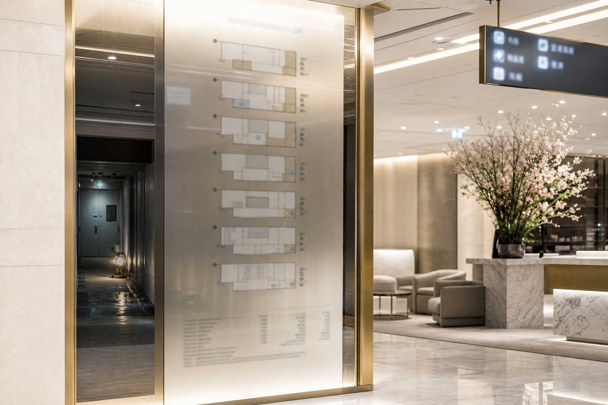
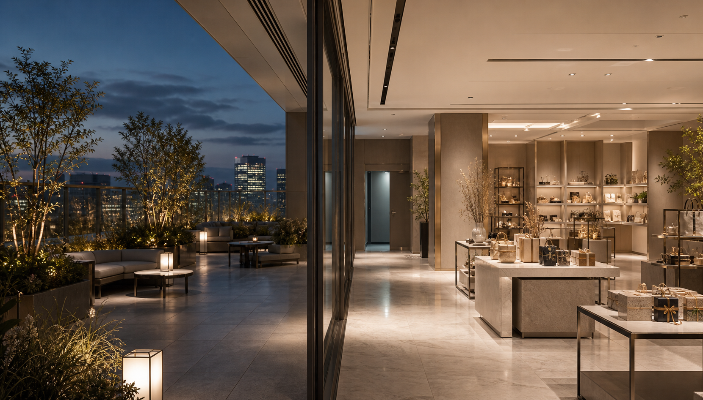

RF
屋上庭園
休憩スペースと臨時イベント設備をご利用いただけます。冬季は風除け区画のみ開放し、催事場の入場整理に合わせて案内を行います。
- 主な施設
- 屋上庭園、自動販売機、臨時イベント設備
- ご案内
- 悪天候時は閉鎖します。閉店後は屋上扉の施錠記録を確認します。

FLOOR GUIDE
階数を選ぶと、同じページ内で売場写真とご案内が切り替わります。混雑時は係員の案内と館内放送に従ってご移動ください。

RF
休憩スペースと臨時イベント設備をご利用いただけます。冬季は風除け区画のみ開放し、催事場の入場整理に合わせて案内を行います。
閉店後の地下連絡通路は、警備確認のため通行できません。設備点検の掲示がある場合は、最寄りの階段または南側エレベーターをご利用ください。